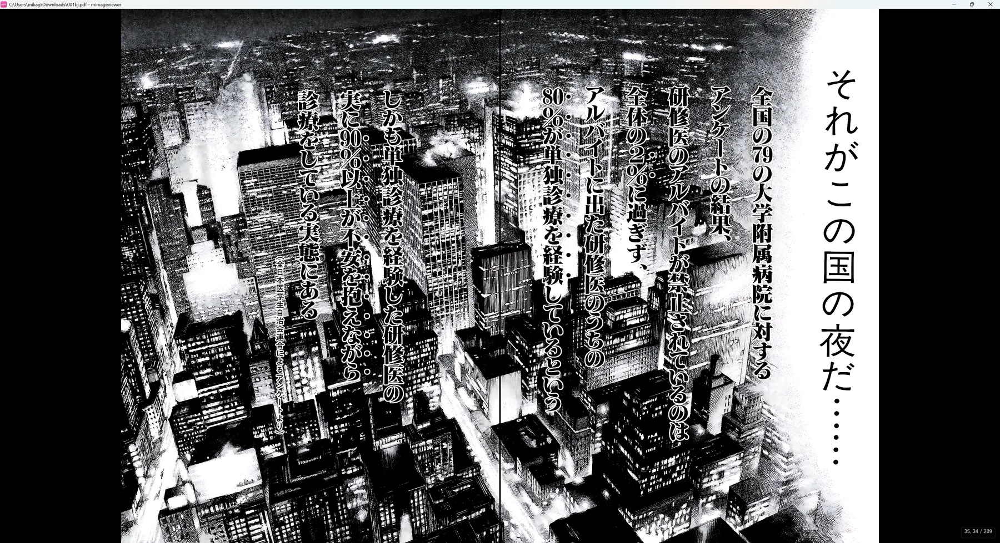

マンガミーヤ（MangaMeeya）で漫画や自炊データを読んできた方へ。 マンガミーヤの後継・代替として mImageViewer に乗り換えるときのポイント ―― 操作・おすすめの初期設定・移行で増える機能 ―― をまとめました。 「ZIP をそのまま見開きで読む」という使い心地はそのままに、 Windows 11 に対応し、WebP・AVIF・HEIC も追加プラグインなしで表示できます。


見開き表示右→左の表紙あり見開き。漫画ビューアとしての基本表示です。
使用素材: ブラックジャックによろしく 佐藤秀峰
はじめに知っておきたいこと
- 動作環境は Windows 11 です。
- 画像ビューアと漫画ビューアを兼ねるため、デフォルトは単ページ表示です。フルスクリーン中に 1〜5 キーで単ページ・見開き・表紙あり見開きを切り替えられます。最初から見開きで開きたい場合は、設定画面でデフォルトを変更できます。
- mImageViewer はサムネイル一覧が基本のビューです。マンガミーヤのフォルダツリーやファイル一覧から場所を選ぶ感覚とは少し違い、mImageViewer はフォルダ・ZIP・PDF・画像・動画をサムネイルで見渡して開く設計です。よく見る場所は「お気に入り」に登録しておくと移動しやすくなります。
- 左側のフォルダツリーは初期状態では表示しません。フォルダツリーで移動したい場合は、ツールバーの ツリー ボタン（または F）で左側に表示できます。
- フォルダにも表紙のようなサムネイルを出せます。フォルダ・ZIP・PDF の代表サムネイルは自動で選ばれますが、好きな画像やページを P キーやフォルダバーのピンで固定できます。フォルダを表紙つきの本棚のように整理する使い方を想定しています。
- マンガミーヤの標準対応形式は、同梱ローダ DLL と設定に依存します。確認した配布ファイルでは、画像は JPEG / JPE / GIF / PNG / BMP / JPEG2000（JP2 / J2K）、アーカイブは LZH / ZIP / RAR / PDF / CBZ / CBR / CBL が標準の対象です。読み取り可能ファイルの一覧には
.mmtや.txtも含まれますが、漫画画像・書庫とは用途が異なります。 - ZIP / CBZ は展開せずそのまま開けます。RAR / 7z / LZH は、最初に開くときに再圧縮なしで ZIP にまとめ直してから表示します（2 回目以降はそのまま開けます。パスワード付き RAR に対応し、分割 RAR は
.part01.rarなどの先頭パートから開けます）。RAR のまま大量に保管している場合は、初回だけ変換の待ち時間とディスク容量が必要になる点が、マンガミーヤとの違いです。 - 操作カスタマイズの自由度はマンガミーヤの方が高いです。マンガミーヤはキーボード、左右クリック、ホイール、拡張ボタン、マウスジェスチャー、ゲームパッド、表示・動作オプションまで GUI で細かく調整できます。mImageViewer でも設定メニューの 操作カスタマイズ… から、キー、右ドラッグ、マウス戻る／進む、ゲームパッドの割り当てを調整できますが、表示・動作オプションの細かさはマンガミーヤほど多くありません。
機能比較
マンガミーヤでよく使われる機能を、mImageViewer 側の対応機能に置き換えて見るための表です。
| 項目 | マンガミーヤ | mImageViewer |
|---|---|---|
| 基本用途 | 多機能でカスタマイズ性の高い漫画用画像ビューアです。 | Windows 11 向けに、見開き閲覧・整理・補正・AI 処理を統合した画像/漫画/動画ビューアです。 |
| 画像形式 | 同梱ローダでは JPEG / JPE / GIF / PNG / BMP / JPEG2000（JP2 / J2K）が標準対象です。追加形式は Susie プラグインで補う構成です。 | JPEG / PNG / GIF / WebP / BMP などを内蔵で表示します。HEIC / AVIF / JPEG XL / RAW なども対応環境では扱えます。 |
| アーカイブ | 同梱の arc.dll は ZIP / RAR / LZH に対応します。ファイルフィルタ上は PDF / CBZ / CBR / CBL もアーカイブ扱いの対象です。 | ZIP / CBZ は直接開きます。RAR / 7z / LZH は初回に ZIP キャッシュ化してから表示します。 |
| その他の読み取り対象 | 読み取り可能ファイルの一覧には .mmt と .txt も含まれます。テキスト表示設定や再生リスト用の .txt など、画像・書庫とは別用途のファイルもあります。 | mImageViewer は画像・漫画アーカイブ・PDF・動画の閲覧が中心です。テキストファイル単体のビューア用途は対象外です。 |
| 見開き読書 | 漫画向けの見開き・表示設定を細かく調整して読む使い方ができます。 | 右→左見開き、表紙あり見開き、1 ページずらし、縦/横連結、表示倍率をフルスクリーン中に切り替えられます。 |
| フォルダ移動 | 左側のフォルダツリーや操作設定を使って移動する使い方があります。 | 初期状態ではツリーを出さず、サムネイル一覧を広く使います。ツリーが必要なときはツールバーの ツリー ボタンで表示します。 |
| フォルダの見た目 | サブフォルダのサムネイル表示設定はありますが、任意のページをフォルダ表紙として固定する使い方とは異なります。基本はフォルダ名やツリーで場所を選ぶ整理です。 | フォルダ・ZIP・PDF に代表サムネイルを表示できます。好きな画像を固定して、表紙つきの本棚のように整理できます。 |
| 余白トリム | Avisynth プロファイルに「クリッピング」「自動クリッピング」「自動クリッピング縦揃え」などがあります。通常の表示設定というより、Avisynth フィルタを有効化し、プロファイルを選んで使う上級者向けの仕組みです。 | 左パネルの「表示トリム」で、自動余白カット、本全体、このページだけ、見開き左右別の調整ができます。プラグインや外部 DLL なしで使え、元ファイルは変更しません。 |
| 操作設定 | キーボードは一般操作・ルーペ/サムネイル操作・Avisynth プラグイン操作などのカテゴリ別に割り当てられます。マウスは左右クリック/ダブルクリック/ドラッグ/長押し/同時押し、ホイール、拡張ボタン、ジェスチャーを GUI で割り当てられます。 | 設定メニューの 操作カスタマイズ… で、キー、右ドラッグ（リング/ジェスチャ）、マウス戻る/進む、ゲームパッドの割り当てを調整できます。旧 keymap.ini がある場合は初回起動時に取り込みます。 |
| ゲームパッド | デバイス選択、無効化、非アクティブ時無効、方向キー/POV/アナログ方向キー、遊び・移動速度、ボタンごとのコマンド割り当てを GUI で設定できます。 | Xbox 系ゲームパッド向けの標準操作を用意しています。設定メニューの 操作カスタマイズ… から X+方向リングの割り当てを画面ごとに調整できますが、各ボタンは既定動作で固定です。 |
| 表示・動作オプション | スクロールバー、サブフォルダサムネイル、読み込み時テキスト表示、フルスクリーン時のカーソル/最前面/タスクバー、履歴、カレントフォルダ監視など、閲覧時の細かな挙動を設定できます。 | 表示・履歴・監視・フルスクリーン関連の設定はありますが、マンガミーヤほど一画面で細部まで操作感を組み立てる構成ではありません。 |
| 移行で増える機能 | 旧環境でも軽快に漫画を読むことに強みがあります。 | タグ・レーティング、閲覧履歴、PDF/動画、色調補正、AI アップスケール、AI ノイズ除去、製本が使えます。 |
おすすめの初期設定
マンガミーヤの使い心地に近づけるための初期設定です。最初に一度だけ設定しておけば、以降の本すべてに適用されます。
- 見開き（右→左）を既定にする ―― 「環境設定 → 表示 → 閲覧表示」の デフォルトのページ構成 を 見開き 右→左 に設定します。
- 開いたらすぐ読書を始める ―― 「環境設定 → 全体設定」の「ZIP/PDF/対応アーカイブ」で 開いたとき、ページをフルスクリーン表示 を選びます。
- RAR を毎回確認なしで変換する ―― 「環境設定 → パフォーマンス → キャッシュ」の「RAR / 7z / LZH の処理」を 確認せずキャッシュを作成する にします。
操作対応表
マンガミーヤで操作をカスタマイズしていた方は、mImageViewer 側の標準操作をこの表から覚えると移行しやすくなります。
| やりたいこと | mImageViewer の操作 | 補足 |
|---|---|---|
| 開く / 閉じる | 一覧で Enter またはダブルクリック。戻るときは Esc / Enter / BS。 | ZIP/PDF/変換アーカイブ内では、Esc と BS で戻り先が異なる場合があります。 |
| ページ送り | ← →、マウスホイール、画面左右クリック。 | 右→左読みではクリック方向も漫画向けに反転します。 |
| 日本の漫画向け見開き | 4 が見開き 右→左、5 が表紙ありの見開き 右→左。 | 1〜5 で単ページ/見開き/表紙ありを切り替えます。 |
| 見開きの組ずれを直す | Ctrl+← / Ctrl+→ | 途中でページの組がずれた本を、現在の閲覧中だけ 1 ページずらして読めます。 |
| 縦スクロール/横スクロール風に読む | 6 でページ単位、縦連結、横連結を切り替えます。 | 連結中は矢印キーやホイールがスクロールとして働きます。 |
| 表示倍率を変える | 0 でフィット方式を巡回。Ctrl+ホイールでズーム。 | ページ全体、横幅、縦幅、100% 原寸を切り替えられます。 |
| 細部を拡大して読む | Z で部分拡大ズーム。M または Shift 押しっぱなしでルーペ。 | Z は拡大範囲を決めてから読む方式、ルーペは一時確認向けです。 |
| 次の本・前の本へ移動 | Ctrl+↑ / Ctrl+↓ | ツリー順で前後のフォルダ / ZIP / PDF / 変換アーカイブへ移動します。 |
| 左側ツリーで移動する | ツールバーの ツリー ボタン、または F でフォルダツリーを表示します。 | 初期状態では非表示です。現在フォルダに合わせて必要な範囲が展開されます。 |
| フォルダに表紙を付ける | 代表にしたい画像・ページを選んで P、またはフォルダバーのピンで固定します。 | フォルダ・ZIP・PDF の一覧で中身が分かりやすくなります。 |
| キー・マウスを割り当てる | 設定メニューの 操作カスタマイズ… から、キー・右ドラッグ（リング/ジェスチャ）・マウス戻る/進む・ゲームパッドを GUI で割り当てます。 | 旧 keymap.ini がある場合は初回起動時に取り込みます。表示・動作オプションの細かさはマンガミーヤほど多くありません。 |
| ゲームパッドで読む | Xbox 系ゲームパッドを接続し、方向パッド/スティック、A/B/X/Y、LB/RB などで操作します。 | 設定メニューの 操作カスタマイズ… のゲームパッドタブで X+方向リングを画面ごとに調整できます。各ボタンは既定動作で固定で、マンガミーヤのような自由なボタン割り当てではありません。 |
見開き・表示の操作（フルスクリーン）
フルスクリーン表示中は、次のキーで切り替えられます。
- ページ構成の切り替え（数字キー）：1 単ページ ／ 2 見開き 左→右 ／ 3 見開き 左→右（表紙あり）／ 4 見開き 右→左 ／ 5 見開き 右→左（表紙あり）。
日本の漫画は 4（右→左）が基本です。1 ページ目が単独の表紙になっている本は 5（表紙あり）にすると、以降の見開きが正しく揃います。 - 途中でページの組がずれたとき：Ctrl+← / Ctrl+→（1 ページずらし）
- 読み方向の切り替え（右→左 ⇄ 左→右）：7
- 表示の流れ（ページ単位／縦連結／横連結スクロール）：6
- 表示倍率（ページ全体／横幅／縦幅／100%原寸）：0
- 部分拡大ズーム：Z（押している間に拡大範囲を指定＋ホイールで倍率、離すと拡大、もう一度 Z で戻る）
- ページ送り：画像の左右クリック／← →／マウスホイール（右→左ではクリックの向きも反転します）
- フルスクリーンの切替：F11、終了：Esc
続きから読む・前回の本を探す
- 続きから／最初からの切り替え：「環境設定 → ライブラリ → 履歴と復元」で設定します（一覧から開いたときの既定は「続きから」）。
- 前回読んでいた本を探す：「ファイル」メニューの 閲覧履歴を開く、またはフォルダバーの 場所▼ → 閲覧履歴 から、最近開いた本・ページを新しい順に開けます。
Susie プラグインを使っていた方へ
マンガミーヤでは標準ローダと Susie プラグインの優先順位を選べますが、mImageViewer では一般的な画像形式（JPEG / PNG / GIF / WebP / BMP など）は内蔵デコーダーで表示します。PI / MAG / PIC などの特殊・レトロ形式の .spi（32bit）を使っていた場合のみ、次の手順で引き継げます。
- 「環境設定 → ファイル処理 → Susie プラグイン」を開きます。
- Susie 画像プラグインを有効にする を ON にします。
- 📁 フォルダを開く を押します（プラグイン用のフォルダが開きます）。
- そのフォルダに、お手持ちの .spi ファイル（32bit）をコピーします。
- ⟳ プラグインを再読み込み を押します。
- 「ロード済みプラグイン」に名前と対応形式が表示されれば完了です。
移行で使える便利な機能
AI アップスケール
解像度の低い古いスキャンや小さな画像を、4 倍に高精細化して読めます。
AI ノイズ除去・消しゴム
JPEG のノイズや、スキャンの汚れ・写り込みを自然に除去（元ファイルは無改変）。
色調補正・ポストフィルタ
明るさ・コントラスト・色調の補正に加え、モノクロを四色刷り風にする効果なども。
読書用表示トリム
白/黒い余白を読むときだけ自動・手動でカット。本全体・このページだけ・見開き左右別に調整できます（元ファイルは無改変）。
画像・動画も同じ管理
漫画だけでなく、画像や動画も同じ一覧で扱えます。タグ・★・検索・代表サムネイルを共通の感覚で使えます。
閲覧履歴
最近読んだフォルダ・ZIP・PDF を一覧から開けます。途中まで読んだ本を探し直しやすくなります。
タグ・検索・製本
タグ付け・横断検索・閲覧履歴、好きなページを 1 冊にまとめる製本機能。
高 DPI・GPU 表示
4K などの高解像度ディスプレイでも、きれいで滑らかに表示します。
無料でダウンロードできます。インストール不要の単体 exe 版・ポータブル版もあります。
操作やショートカットの詳細は オンラインマニュアル を参照してください。